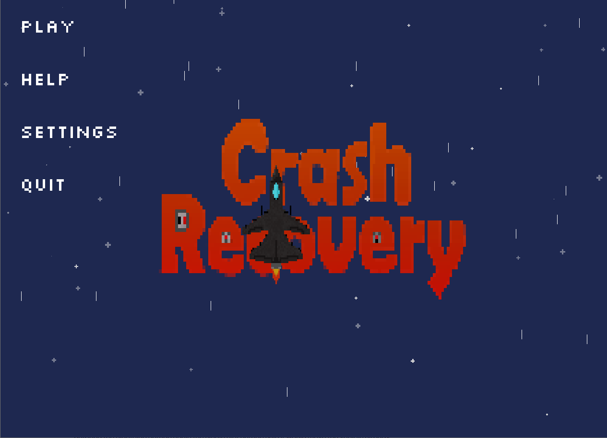
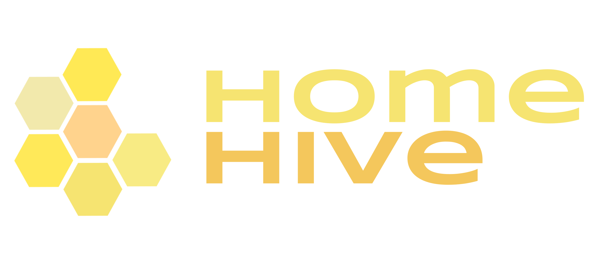
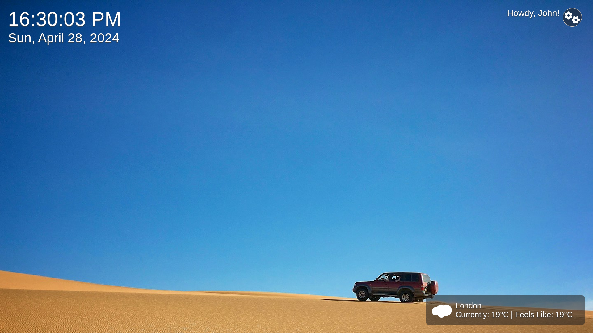

Projects
Crash Recovery
Crash Recovery is an adventure game written in Java, representing a significant effort in my programming journey. With a robust architecture consisting of over 40 Java classes, this project served as a pivotal learning experience, allowing me to tackle the complexities of a larger-scale program. Throughout its development, I encountered numerous challenges and lessons, enriching my understanding of software design and implementation.
In Crash Recovery, players embark on a journey through various levels, tasked with defending their character against formidable enemies. The goal? To gather essential ship parts scattered across the terrain, crucial for repairing the protagonist's vessel following a crash landing. This adventure not only showcased my technical skills but also fostered creativity and problem-solving abilities, shaping me into a more proficient developer.

Home Hive
HomeHive is a collaborative project developed as part of the coursework for the 3307 Object-Oriented Design and Analysis course. Built using C++ and incorporating GTK, the Unsplash API, and libcurl. HomeHive offers a variety of functionalities including weather updates, news feeds, alarms, and dynamic background image switching.
Our sales pitch of the product. The HomeHive is a revolutionary smart-home assistant device and is designed to improve your productivity. Built using the Raspberry Pi, its internet connectivity allows you to integrate into your calendar to give you reminders of upcoming events. Its proprietary and groundbreaking smarthome alarm clock technology allows you to set timers & alarms, automatically playing the latest news, tell you the weather or play your favourite tunes whenever you wake up.
